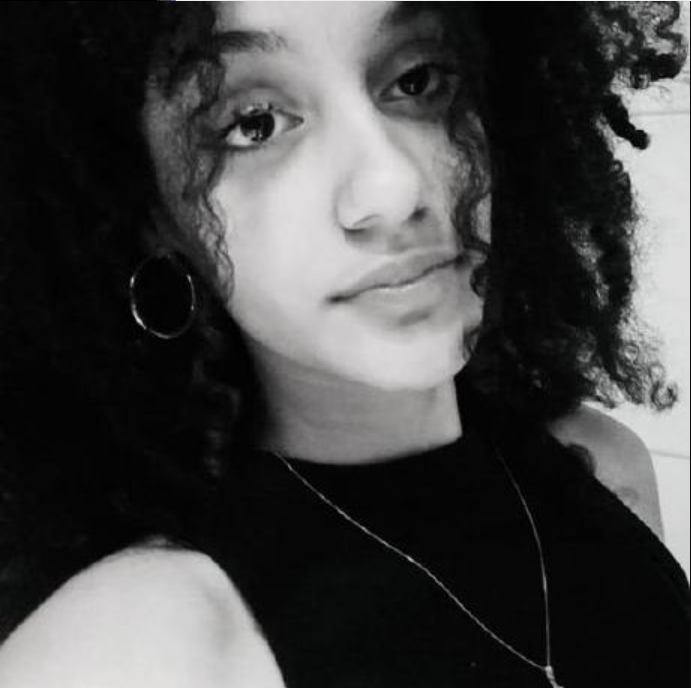

Meu nome é
NICOLLY
CRUZ
sou
Estudante de |Biomedicina

SOBREMIM:
Tenho 16 anos e sou estudante do SENAI, apaixonada por filmes e culinária. Minha jornada começou na programação, no segundo ano do ensino médio, cursei desenvolvimento de sistemas no SENAI, porém, minha paixão sempre foi voltada para a área da saúde, então prestei o vestibular e consegui passar na Universidade Federal De São Carlos, desde então sigo o meu sonho.
Como estudante de Biomedicina, minha missão é ajudar a criar soluções viáveis na área da saúde